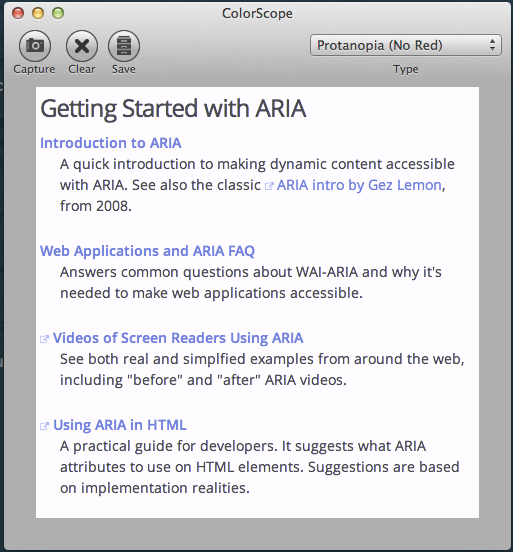
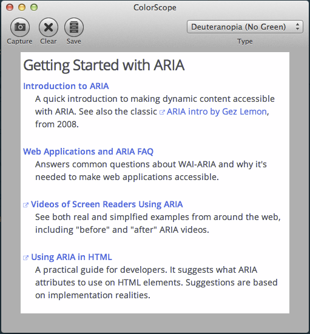
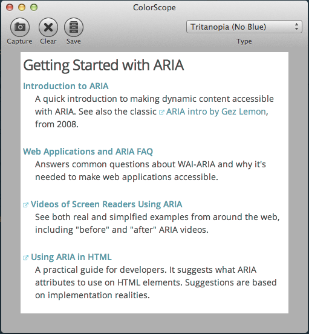
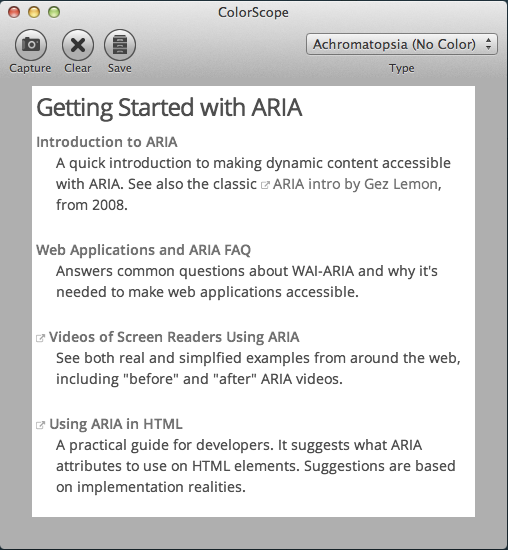
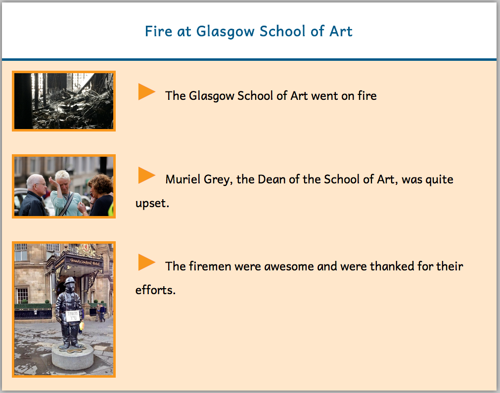

class: center, middle # JavaScript, A11y and You ## Alan Gardner ### Code for Europe Technologist in Residence ??? --- class: center, middle # Introduction ??? * Estimated that approximately 10-20% of people that use the web have a disability of some sort * Historically JavaScript has caused accessibility issues * Myths that Assistive Technology doesn't support JavaScript or that impaired users turn it off --- class: center, middle # Impairments ??? * Let's start by taking a look at the type of impairments that people might have and how it might affect their usage of your web app --- class: center, middle ## Visual ??? * This is the most obvious and widely talked about * Blind users * use screen readers * more on how to help with this later * audio description on videos * Partially-sighted users * user screen zooming (sometimes just magnifying glass) * ensure your content scales well * allow user to focus on content * Readability mode * Colour blindness * use a valid colour scheme or allow user to choose one that suits them * try to include symbols as well as colours for indication * Photosensitive * consider low-contrast or dark-themed version of the site * be aware polarised lenses can sometimes interfere with the ability to view the screen on some devices --- class: center, middle ## Auditory ??? * Subtitles * Transcription * Translate to British Sign Language --- class: center, middle ## Motor ??? * keyboard only input * voice activation --- class: center, middle ## Cognitive ??? * In some cases only so much you can do * Pitch to the lowest reading level you need to * Lay your content out well * Be clear an concise in your message --- class: center, middle ## Seizures ??? * Be aware that certain things can cause photoepileptic seizures --- class: center, middle # Making your app accessible ??? * What are the ways in which you can make your content accessible to as many people as possible? --- class: center ## Colour blindness testing     ??? --- class: center, middle ## Readability  ??? --- class: center, middle ## Audio Description, Transcription and Subtitles ??? --- class: center, middle ## Cater to all input devices ??? --- class: center, middle ## AT Friendly ??? --- class: center, middle # ARIA ??? * Web Accessibility Initiative - Accessible Rich Internet Applications * WAI-ARIA standard from W3C * Way to add semantic information to elements through HTML/XML attributes * Has three types of attributes: roles, properties and states --- class: center, middle ## Ordinary markup ```html <!-- fancy pants select --> <ol class="select"> <li class="option">Item 1</li> <li class="option">Item 2</li> <li class="option">Item 3</li> </ol> ``` ??? * Not semantic --- class: center, middle ## Roles ```html <!-- fancy pants select --> <ol role="select"> <li role="option">Item 1</li> <li role="option">Item 2</li> <li role="option">Item 3</li> </ol> ``` ??? * Describe the purpose of an element * divs and spans do not have enough semantic information to derive purpose * allow assistive devices to interact with a widget, such as a form, slider or tabbed view as if it were a desktop equivalent * once a role is set it should not be changed * if you need to change role use a new element instead --- class: center, middle ## Properties ```html <!-- fancy pants select --> <ol role="select" aria-required="true"> <li role="option">Item 1</li> <li role="option">Item 2</li> <li role="option">Item 3</li> </ol> ``` ??? * Define characteristics of an element * required * draggable * associated modal --- class: center, middle ## States ```html <!-- fancy pants select --> <ol role="select" aria-required="true"> <li role="option" aria-selected="true">Item 1</li> <li role="option">Item 2</li> <li role="option">Item 3</li> </ol> ``` ??? * Indicate the current state of an element * disabled * checked * busy * hidden --- class: center, middle ## Usage ```html <!-- HTML --> <div role="tooltip" aria-hidden="true"> Hello, World </div> ``` ```javascript // JavaScript var showTip = function(el) { el.setAttribute('aria-hidden', 'false'); } ``` ```css /* CSS */ div.tooltip { background: yellow } div.tooltip[aria-hidden="true"] { display: none } ``` ??? * use JavaScript to set the state or property and then use CSS attribute selectors to add style etc. --- class: center, middle ## Live regions ```html <select id="bird-selector" aria-controls="bird-info"> <option>Chaffinch</option> <option>Blackbird</option> <option>Robin</option> </select> <div role="region" id="bird-info" aria-live="polite"></div> ``` ??? * Let you indicate that an element will be updated without a page refresh * aria-live indicates that the element is a live region * off (default) = no notification on update * polite = waits until user takes a break until it notifies them * assertive = notifies the user straight away * aria-control indicates the live region that the control updates * WARNING: not fully adopted in all browsers --- class: center, middle ## Live regions ```html <ul id="roster" aria-live="polite" aria-relevant="additions removals"> <!-- use JavaScript to add remove users here--> </ul> ``` ??? * advanced options * atomic = when true notifies all contents of live region, when false only notifies changed items * relevant = only notifies on add and/or update and/or removal * labelledBy * describedBy --- class: center, middle # Accessibility Gotchas ??? * JavaScript allows you to do some powerful things * But there is a reason that it sometimes gets a bad rap in the a11y world * With great power yada yada --- class: center, middle ## Adding new content without user's knowledge ??? * Adding new content to the page that Assistive Devices can't see --- class: center, middle ## Use of indicators that some users can't see ??? * Rollover effects that are missed by screen readers * Highlights/links that are missed by the colour blind --- class: center, middle ## Usurping the browser/OS default controls ??? * Breaking, or worse changing, the default browser/OS controls --- class: center, middle ## Death by a thousand notifications ??? * Constantly changing/updating content --- class: center, middle ## Worm holes ??? * Moving the position of the user within the page without warning --- class: center, middle ## Lack of control/flexibility ??? * Locking them in to your apps control system and making it hard or impossible to get out --- class: center, middle # How much should you do? ??? --- class: center, middle ## Be realistic ??? * You have a limited amount of time/money * Is it possible for your content to be consumed by a group even with the best a11y you can manage (i.e. severe cognitive issues)? --- class: center, middle ## Accessible by default? ??? * There is definitely low hanging fruit * For example, many javascript UI libs have a11y built in --- class: center, middle ## Altruistic vs. Savvy ??? * You shouldn't cut users off from your content just because you haven't factored in time to make it available to them * On the one hand you may want to take the time to make your app available to anyone * On the other hand you may want to try some research to prove that there is a genuine need for the support --- class: center, middle # Questions? ??? --- # Resources * W3C Guidelines - [http://www.w3.org/TR/WCAG/](http://www.w3.org/TR/WCAG/) * MDN Accessibility Guide - [https://developer.mozilla.org/en-US/docs/Web/Accessibility](https://developer.mozilla.org/en-US/docs/Web/Accessibility) * MDN ARIA Guide - [https://developer.mozilla.org/en-US/docs/Web/Accessibility/ARIA](https://developer.mozilla.org/en-US/docs/Web/Accessibility/ARIA) * WebAIM articles - [http://webaim.org/articles/](http://webaim.org/articles/) * BBC My Web My Way - [http://www.bbc.co.uk/accessibility/best_practice/what_is.shtml](http://www.bbc.co.uk/accessibility/best_practice/what_is.shtml) * eAccessibility forum - [http://www.discuss.culture.gov.uk/eaccessibility/](http://www.discuss.culture.gov.uk/eaccessibility/) * GDS accessibility blog post - [https://gds.blog.gov.uk/2012/01/20/user-testing-accessibility/](https://gds.blog.gov.uk/2012/01/20/user-testing-accessibility/) ???